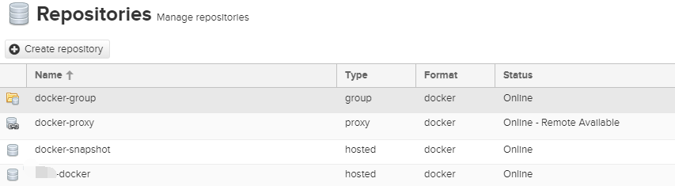
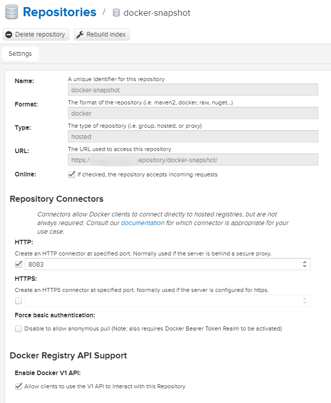
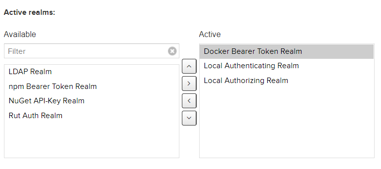

docker-maven-plugin配置及SpringBoot使用
文章目录
安装nexus3
本例中使用docker搭建nexus3之后，使用docker-maven-plugin在springBoot中配置maven插件，自动完成docker build tag push自动化操作
nexus-docker
Dockerfile
FROM java:8u111-jdk-alpine
MAINTAINER lee <leechedan@gmail.com>
ENV NEXUS_VERSION 3.14.0-04
ENV SONATYPE_DIR /opt/sonatype
ENV NEXUS_HOME ${SONATYPE_DIR}/nexus
ENV NEXUS_DATA /nexus-data
ENV NEXUS_CONTEXT ''
ENV SONATYPE_WORK ${SONATYPE_DIR}/sonatype-work
# install nexus
RUN apk update && apk add openssl && ls /var/cache/apk/|xargs -i rm -fr /var/cache/apk/{}
RUN mkdir -p /opt/sonatype/ \
&& wget https://download.sonatype.com/nexus/3/nexus-${NEXUS_VERSION}-unix.tar.gz -O - \
| tar zx -C "${SONATYPE_DIR}" && rm -fr ${SONATYPE_WORK} \
&& mv "${SONATYPE_DIR}/nexus-${NEXUS_VERSION}" "${NEXUS_HOME}"
# configure nexus
RUN sed \
-e '/^nexus-context/ s:$:${NEXUS_CONTEXT}:' \
-i ${NEXUS_HOME}/etc/nexus-default.properties
## create nexus user
RUN adduser -S -u 200 -D -H -h "${NEXUS_DATA}" -s /bin/false nexus nexus
RUN mkdir -p "${NEXUS_DATA}/etc" "${NEXUS_DATA}/log" "${NEXUS_DATA}/tmp" "${SONATYPE_WORK}"
RUN ln -s ${NEXUS_DATA} ${SONATYPE_WORK}/nexus3
## prevent warning: /opt/sonatype/nexus/etc/org.apache.karaf.command.acl.config.cfg (Permission denied)
RUN chown -R nexus "${NEXUS_HOME}/etc/"
RUN apk update && apk add curl bash ca-certificates bash tzdata && \
ln -sf /usr/share/zoneinfo/Asia/Shanghai /etc/localtime && \
echo "Asia/Shanghai" > /etc/timezone
COPY entrypoint.sh /
VOLUME ${NEXUS_DATA}
EXPOSE 8081
WORKDIR ${NEXUS_HOME}
ENV JAVA_MAX_MEM 1200m
ENV JAVA_MIN_MEM 1200m
ENV EXTRA_JAVA_OPTS ""
ENTRYPOINT ["/entrypoint.sh"]
entrypoint.sh
#!/bin/sh -e
[ -d "${NEXUS_DATA}" ] || mkdir -p "${NEXUS_DATA}"
[ $(stat -c '%U' "${NEXUS_DATA}") != 'neuxs' ] && chown -R nexus "${NEXUS_DATA}"
# clear tmp and cache for upgrade
rm -fr "${NEXUS_DATA}"/tmp/ "${NEXUS_DATA}"/cache/
[ $# -eq 0 ] && \
exec su -s /bin/sh -c '/opt/sonatype/nexus/bin/nexus run' nexus || \
exec "$@"
nexus配置
基础当然是group + hosts-snapshot + hosts-release + proxy


重点是Realms配置,如果不打开，docker login操作会失败。同理如果配置npm托管仓库，也需要打开对应的权限，否则npm login会失败。这一块曾经在帮前端做login的时候解决过，由于没有记录，现在花了不少时间，网上关于这个的博文不多。
注意port是上图中配置docker时候的http端口，此处建立仓库之后，nexus会单独建立线程开放该端口用于docker的远程login
docker login -u admin -p pwd ip:port
Error response from daemon: Get http://ip:8086/v2/: dial tcp ip:8086: getsockopt: connection refused 端口错误
Error response from daemon: login attempt to http://ip:8085/v2/ failed with status: 401 Unauthorized realms未开启
Error response from daemon: login attempt to http://ip:8081/v2/ failed with status: 404 Not Found 端口错误
Error response from daemon: Get https://ip:8082/v2/: http: server gave HTTP response to HTTPS client 可能是https代理没有完整，导致错误

对于ssl，在nexus内部的jettyserver配置ssl太过复杂，而且对应客户端需要有证书，所以直接使用insecure-registries。本来尝试在nginx层面使用ssl，但是ssl必须要求使用80端口[返回的html页面的js css资源地址全部使用80端口]，也出现失败。于是作罢，对于内网型组件不作过多安全要求。
未完成部分
将client的default-registry的docker.io切换到建立的group仓库的ip:port
docker的客户端配置
为所有安装了docker的机器编辑文件/etc/docker/daemon.json
{
"graph":"/home/data/docker",
"registry-mirrors": ["http://ip:8084"],
"insecure-registries":[
"ip:8083",
"ip:8084",
"ip:8085",
"ip:8086"
],
"disable-legacy-registry": true
}
重启docker服务生效
serivce docker restart
在任意机器运行
docker run -d -e e1=e1 -p 8080:8080 ip:8083/service:tag
工程配置
docker-maven-plugin
<plugin>
<groupId>com.spotify</groupId>
<artifactId>docker-maven-plugin</artifactId>
<version>1.1.1</version>
<configuration>
<imageName>${project.artifactId}</imageName>
<!--建议重要的发行版本使用M1类似的非重复号，否则75:8083为可以重复覆盖部署的仓库会丢失历史部署-->
<imageTags>${project.version}</imageTags>
<baseImage>ip:8083/web:base</baseImage><!--修改成基础镜像比如tomcat:base-->
<maintainer>author@email.com</maintainer>
<!--修改成基础镜像的tomcat home目录-->
<workdir>/app</workdir>
<resources>
<resource>
<targetPath>/ROOT</targetPath><!--修改成基础镜像的tomcat_home/webapps-->
<directory>${project.build.directory}</directory><!--指向target-->
<include>${project.build.finalName}.tar.gz</include><!--修改成war包名字-->
</resource>
</resources>
</configuration>
<executions>
<execution>
<id>build-image</id>
<phase>package</phase>
<goals>
<goal>build</goal>
</goals>
</execution>
<execution>
<id>tag-image</id>
<phase>package</phase>
<goals>
<goal>tag</goal>
</goals>
<configuration>
<image>${project.artifactId}:${project.version}</image>
<!--此处的project.version为tagname，重复会导致覆盖-->
<newName>ip:8083/${project.artifactId}:${project.version}</newName>
</configuration>
</execution>
<execution>
<id>push-image</id>
<phase>deploy</phase>
<goals>
<goal>push</goal>
</goals>
<configuration>
<imageName>ip:8083/${project.artifactId}:${project.version}</imageName>
</configuration>
</execution>
</executions>
</plugin>
docker-sbt
plugin.sbt
addSbtPlugin("se.marcuslonnberg" % "sbt-docker" % "1.5.0")
import sbt.Keys._
import sbt._
object DockerProjectSpecificAssemblyPlugin extends AutoPlugin {
import sbtdocker.DockerPlugin
import DockerPlugin.autoImport._
override def trigger = allRequirements
override def requires = DockerPlugin
// base project settings
def projectBase(id: String)(base: String = id) = Project(id, base = file(base))
.settings(
fork in run := true,
)
// settings for a native-packager based docker project based on sbt-docker plugin
def sbtdockerAssemblySparkBase(id: String,
assembly: TaskKey[sbt.File],
dockerSparkBaseImage: String = "lightbend/spark:2.3.1-2.2.1-2-hadoop-2.6.5-01",
baseImageJarPath: String = "/opt/spark/dist/jars",
dockerSparkBaseImageForK8s: String = "gcr.io/ynli-k8s/spark:v2.3.0",
baseImageForK8sJarPath: String = "/opt/spark/jars")(base: String = id) = projectBase(id)(base)
.enablePlugins(sbtdocker.DockerPlugin)
.settings(
dockerfile in docker := {
val artifact: File = assembly.value
if (System.getProperty("K8S_OR_DCOS") == "K8S") {
val artifactTargetPath = s"$baseImageForK8sJarPath/${artifact.name}"
new Dockerfile {
from (dockerSparkBaseImageForK8s)
add(artifact, artifactTargetPath)
runRaw("mkdir -p /etc/hadoop/conf")
runRaw("export HADOOP_CONF_DIR=/etc/hadoop/conf")
}
} else {
val artifactTargetPath = s"$baseImageJarPath/${artifact.name}"
new Dockerfile {
from (dockerSparkBaseImage)
add(artifact, artifactTargetPath)
runRaw("mkdir -p /etc/hadoop/conf")
runRaw("export HADOOP_CONF_DIR=/etc/hadoop/conf")
}
}
},
// Set name for the image
imageNames in docker := Seq(
ImageName(namespace = Some(organization.value),
repository = (if (System.getProperty("K8S_OR_DCOS") == "K8S") s"${name.value.toLowerCase}-k8s"
else name.value.toLowerCase),
tag = Some(version.value))
),
buildOptions in docker := BuildOptions(cache = false)
)
// settings for an assembly based docker project based on sbt-docker plugin
def sbtdockerAssemblyFlinkBase(id: String,
assembly: TaskKey[sbt.File])(base: String = id) = projectBase(id)(base)
.enablePlugins(sbtdocker.DockerPlugin)
.settings(
dockerfile in docker := {
val artifact: File = assembly.value
val artifactTargetPath = s"/flink-1.4.2/app/jars/${artifact.name}"
new Dockerfile {
from ("mesosphere/dcos-flink:1.4.2-1.0")
add(artifact, artifactTargetPath)
runRaw("mkdir -p /flink-1.4.2/app/jars")
}
},
// Set name for the image
imageNames in docker := Seq(
ImageName(namespace = Some(organization.value),
repository = name.value.toLowerCase,
tag = Some(version.value))
),
buildOptions in docker := BuildOptions(cache = false)
)
}
import sbt.Keys._
import sbt._
object DockerProjectSpecificPackagerPlugin extends AutoPlugin {
import sbtdocker.DockerPlugin
import DockerPlugin.autoImport._
import com.typesafe.sbt.packager.archetypes.JavaAppPackaging
import JavaAppPackaging.autoImport._
override def trigger = allRequirements
override def requires = DockerPlugin && JavaAppPackaging
// base project settings
def projectBase(id: String)(base: String = id) = Project(id, base = file(base))
.settings(
fork in run := true,
)
// settings for a native-packager based docker project based on sbt-docker plugin
def sbtdockerPackagerBase(id: String,
applDir: TaskKey[sbt.File],
executableScriptName: SettingKey[String],
dockerBaseImage: String = "openjdk:8u151-jre")(base: String = id) = projectBase(id)(base)
.enablePlugins(sbtdocker.DockerPlugin)
.settings(
dockerfile in docker := {
val targetDir = s"/$base"
new Dockerfile {
from(dockerBaseImage)
entryPoint(s"$targetDir/bin/${executableScriptName.value}")
copy(applDir.value, targetDir)
}
},
// Set name for the image
imageNames in docker := Seq(
ImageName(namespace = Some(organization.value),
repository = name.value.toLowerCase,
tag = Some(version.value))
),
buildOptions in docker := BuildOptions(cache = false)
)
}
项目中
// settings for a native-packager based docker scala project based on sbt-docker plugin
def sbtdockerScalaAppBase(id: String)(base: String = id) =
Project(id, base = file(base))
.enablePlugins(sbtdocker.DockerPlugin, JavaAppPackaging)
.settings(
dockerfile in docker := {
val appDir = stage.value
val targetDir = s"/$base"
new Dockerfile {
from("openjdk:8u151-jre")
entryPoint(s"$targetDir/bin/${executableScriptName.value}")
copy(appDir, targetDir)
}
},
// Set name for the image
imageNames in docker := Seq(
ImageName(namespace = Some(organization.value),
repository = name.value.toLowerCase,
tag = Some(version.value))
),
buildOptions in docker := BuildOptions(cache = false)
)
lazy val recommendStream = DockerProjectSpecificPackagerPlugin.sbtdockerPackagerBase("stream", stage, executableScriptName)("./stream-spring")
.enablePlugins(JavaAppPackaging)
.settings(buildSettings)
.settings(
mainClass in Compile := Some("com.main.Main"),
libraryDependencies ++= springStream,
bashScriptExtraDefines += """addJava "-Dconfig.resource=cluster.conf""""
).dependsOn(base)